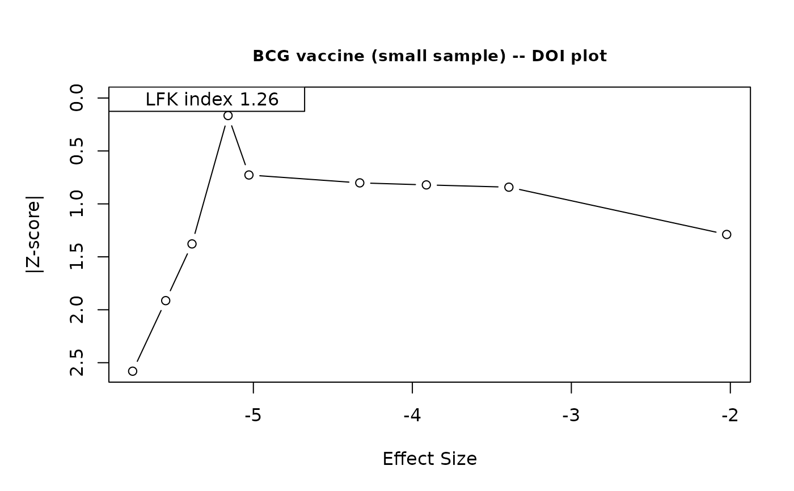

Displays a DOI plot and LFK index using metasens::doiplot().
Recommended for meta-analyses with fewer than 10 studies, where Egger's
and Begg's tests have low power. For larger analyses, use
publication_bias() instead.
Usage
doi_plot(
object,
title = NULL,
save_as = c("viewer", "pdf", "png", "tiff"),
filename = NULL,
width = 7,
height = 7,
...
)Arguments
- object
A
meta_ratio,meta_mean, ormeta_propobject.- title
Optional character string for the plot title. No title is drawn when
NULL(the default).- save_as
One of
"viewer"(default),"pdf","png", or"tiff".- filename
Optional file path. If
NULLandsave_as != "viewer", a timestamped file is created intempdir().- width, height
Plot dimensions in inches (default 7\,x\,7).
- ...
Additional arguments passed to
metasens::doiplot().
Examples
# \donttest{
data(dat_bcg, package = "metapropul")
# Use only first 9 studies so k < 10
small <- dat_bcg[1:9, ]
result <- meta_prop(
data = small, event = "tpos", n = "npos",
studylab = "author"
)
doi_plot(result)
#>
#> DOI Plot for Publication Bias
#> --------------------------------
#> Total studies included: 9
#> DOI plot displayed in Viewer. Use save_as = 'pdf', 'png', or 'tiff' to export.
doi_plot(result, title = "BCG vaccine (small sample) -- DOI plot")
#>
#> DOI Plot for Publication Bias
#> --------------------------------
#> Total studies included: 9

#> DOI plot displayed in Viewer. Use save_as = 'pdf', 'png', or 'tiff' to export.
# }